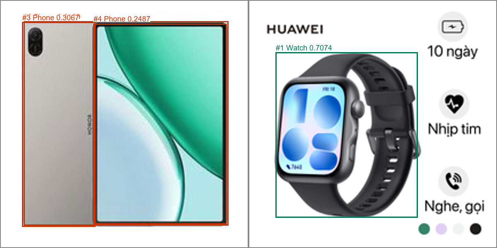
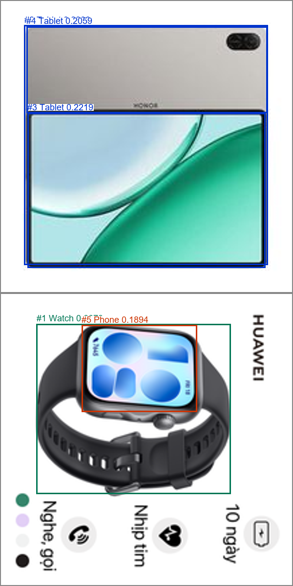
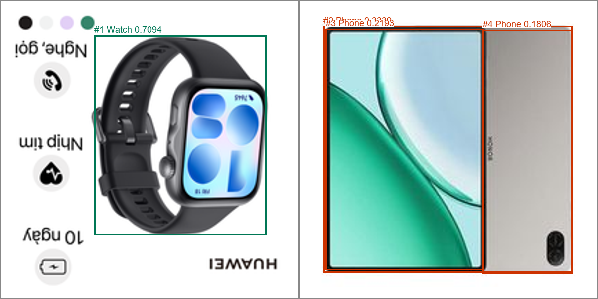
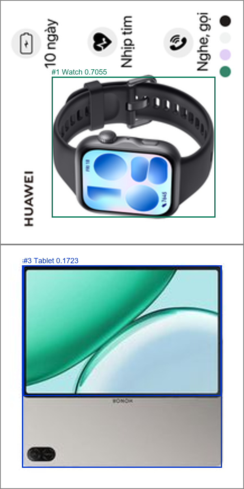
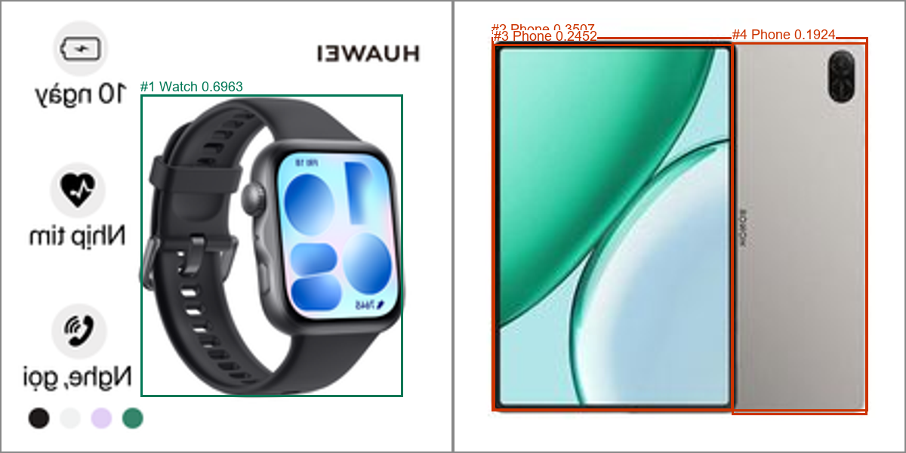
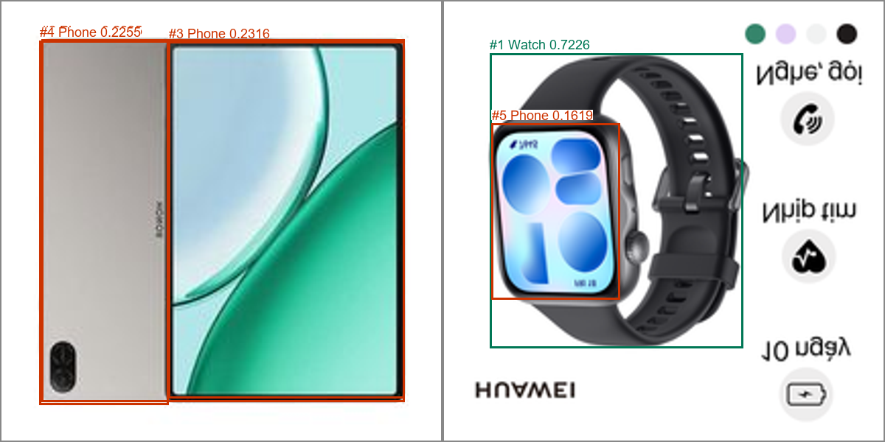

Gốc
Gốc | 4 | 3 | Không | Phone 0.3129 | 1 | Có | Watch 0.7074

# Xoay/lật ảnh ghép tablet__watch | Biến đổi | Tổng box | Box vùng tablet | Có box Tablet đúng | Top vùng tablet | Box vùng watch | Có box Watch đúng | Top vùng watch | |---|---:|---:|---|---|---:|---|---| | Gốc | 4 | 3 | Không | Phone 0.3129 | 1 | Có | Watch 0.7074 | | Xoay 90° | 5 | 3 | Có | Tablet 0.2800 | 2 | Có | Watch 0.6673 | | Xoay 180° | 4 | 3 | Không | Phone 0.3339 | 1 | Có | Watch 0.7094 | | Xoay 270° | 3 | 2 | Có | Tablet 0.5011 | 1 | Có | Watch 0.7055 | | Lật ngang | 4 | 3 | Không | Phone 0.3507 | 1 | Có | Watch 0.6963 | | Lật dọc | 5 | 3 | Không | Phone 0.2895 | 2 | Có | Watch 0.7226 | ## Giới hạn - Single previously observed synthetic pair, not an independent accuracy estimate. - Success is any correctly labelled box in the transformed target panel, not exact object IoU. - Target panels rotate/flip with the whole image; ground truth never enters model inference. - Clockwise rotations; same threshold, queries and top-12 policy. No production changes.
Gốc | 4 | 3 | Không | Phone 0.3129 | 1 | Có | Watch 0.7074

Xoay 90° | 5 | 3 | Có | Tablet 0.2800 | 2 | Có | Watch 0.6673

Xoay 180° | 4 | 3 | Không | Phone 0.3339 | 1 | Có | Watch 0.7094

Xoay 270° | 3 | 2 | Có | Tablet 0.5011 | 1 | Có | Watch 0.7055

Lật ngang | 4 | 3 | Không | Phone 0.3507 | 1 | Có | Watch 0.6963

Lật dọc | 5 | 3 | Không | Phone 0.2895 | 2 | Có | Watch 0.7226
